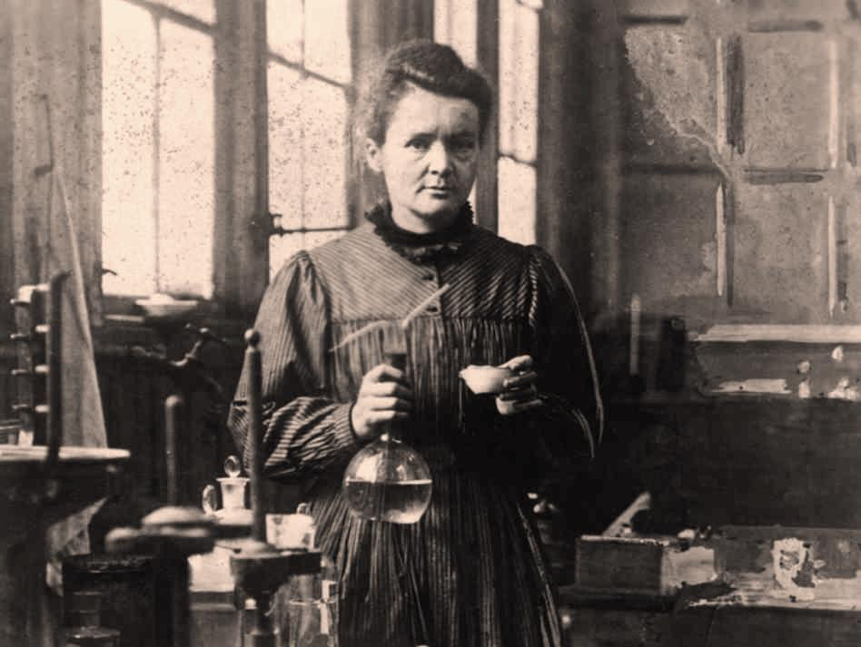
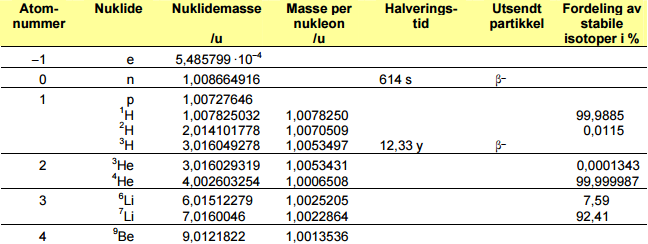
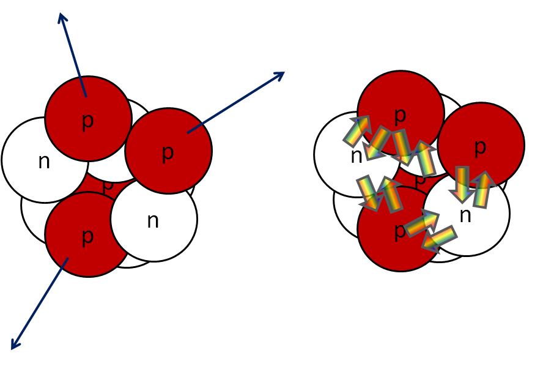
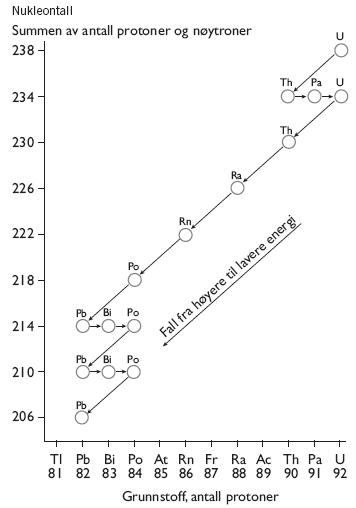
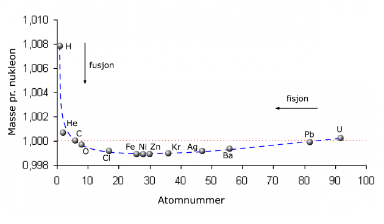

Energi som er sendt ut fra en atomkjerne
Nei, det er når et nøytron omdannes til et proton og elektron
Et proton
Et nøytron, så vidt
En atomkjerne består av protoner og nøytroner.
Antallet nukleoner i kjernen kaller vi nukleontallet, \(A\). Vi har
\(A = Z + N\).
En atomkjerne, \(X\), med \(Z\) protoner og \(A\) nukleoner skriver vi som
\(^{A}_{Z}X\).
Vi utelater ofte \(Z\), da vi også kan se dette fra symbolet til grunnstoffet.
Både nøytronet og protonet har en masse på tilnærmet \(1 u\).
\(u\) kalles atommasseenheten og er definert som \(1/12\) av massen til \(^{12}C\).
\(u=1,66\cdot 10^{-27} \text{kg}\).

Hvorfor sprenger ikke protonene atomkjernen?
De elektromagngetiske kreftene skyver protonene fra hverandre, den sterke kjernekraften holde dem sammen.

Ja, det finnes også en svak kjernekraft.
Blir atomene for store, "vinner" de elektromagnetiske kreftene.
Forklar hva figuren under viser. 
Ulike nuklider har ulik masse per nukleon. Hva kommer dette av?

\(E = mc^2\)